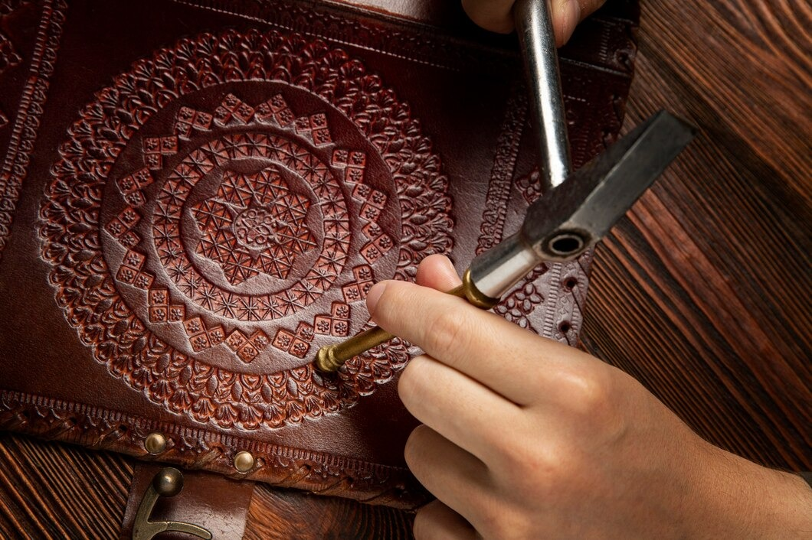

At Men's Leather Accessories, we take pride in offering premium handcrafted leather products designed to complement the modern man's lifestyle. Our brand is built on a passion for quality, durability, and timeless style.
Founded over a decade ago, our mission has always been to blend tradition with innovation. We work with expert artisans who have spent years mastering the craft of leatherwork. Each piece is carefully selected, designed, and crafted to perfection, ensuring unmatched quality.
We use only the finest full-grain leather sourced from reputable tanneries. Our products undergo rigorous quality control measures to ensure they meet the highest standards. Whether it’s a sleek leather wallet, a sophisticated belt, or a premium leather bag, each item is built to last.
Our skilled artisans meticulously craft each product, combining traditional techniques with modern design aesthetics. The result is a collection of timeless accessories that exude sophistication and durability.
